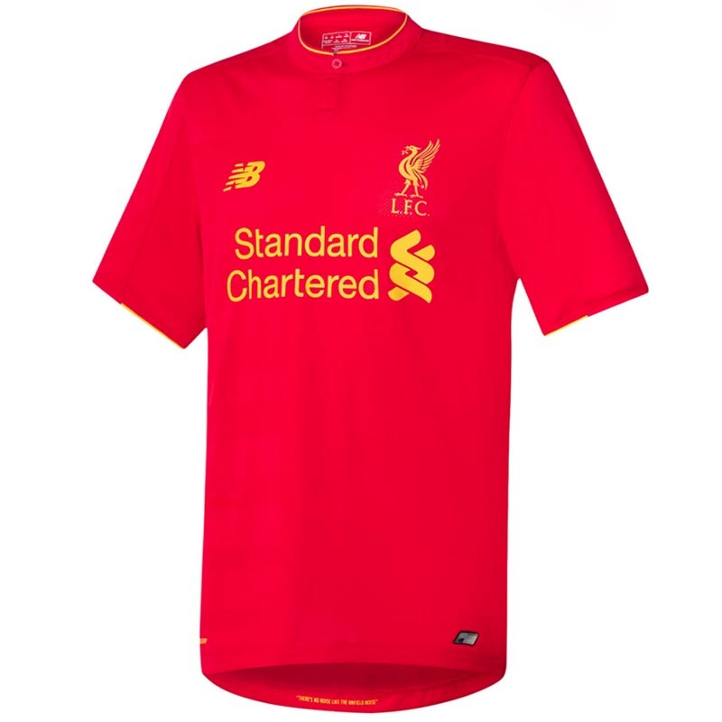
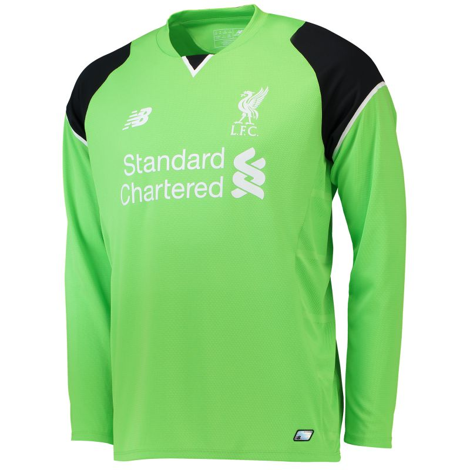
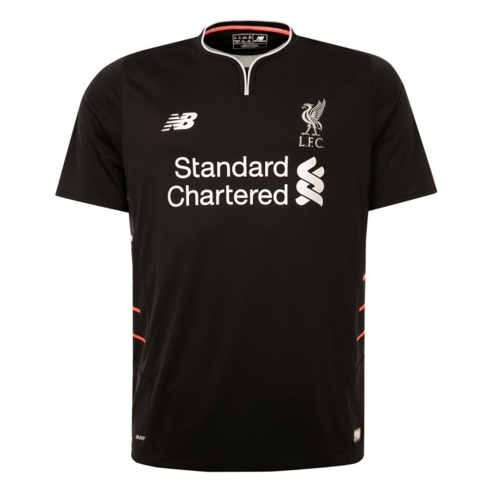
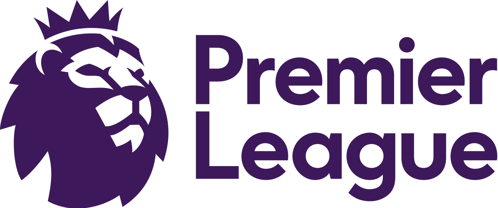
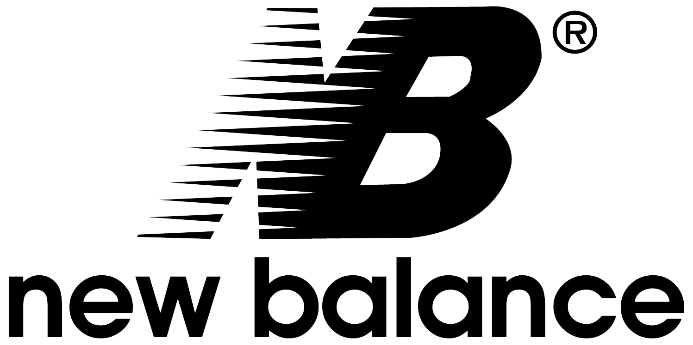

LIVERPOOL FC HOME KIT 2016-17
Click image for more information | Click again to hide

The 16/17 Liverpool FC New Balance Men’s Short Sleeve Home Shirt is a 100% authentic replica shirt, and this design will be worn by the players throughout the 2016/17 season.
Featuring a former captains famous quote, “There’s no noise like the Anfield noise” on the inner hem.
Yellow 96 emblem to the back of the neck to commemorate the tragic events of Hillsborough.
Featuring a former captains famous quote, “There’s no noise like the Anfield noise” on the inner hem.
Yellow 96 emblem to the back of the neck to commemorate the tragic events of Hillsborough.

The 16/17 Liverpool FC Men’s Long Sleeve Home Goalkeeper Shirt is a 100% authentic replica shirt, and this design will be worn by LFC’s goalkeepers throughout the 2016/17 season.
Available in locust green with black shoulder zones, the goalkeeper kit has a standout but stylish look, complementing the outfield kit design.
White 96 emblem to the back of the neck to commemorate the tragic events of Hillsborough.
Available in locust green with black shoulder zones, the goalkeeper kit has a standout but stylish look, complementing the outfield kit design.
White 96 emblem to the back of the neck to commemorate the tragic events of Hillsborough.

The 2016/17 Liverpool FC New Balance Mens Short Sleeve Away Shirt is a 100% authentic replica shirt. This design will be worn by the players during selected away games throughout the 2016/17 season.
Featuring a Bill Shankly famous quote, “red for danger, red for power” on the inner hem.
Silver ‘96 emblem on the back of the neck to commemorate the tragic events of Hillsborough.
Featuring a Bill Shankly famous quote, “red for danger, red for power” on the inner hem.
Silver ‘96 emblem on the back of the neck to commemorate the tragic events of Hillsborough.

The 2016/17 Liverpool FC Kids Long Sleeve Away Goalkeeper Shirt is a 100% authentic replica shirt. This design will be worn by LFC goalkeepers during selected away games throughout the 2016/17 season.
The 2016/17 Away Goalkeeper Shirt comes in an impulse orange design with black shoulder flex zones.
White ‘96 emblem on the back of the neck to commemorate the tragic events of Hillsborough.
The 2016/17 Away Goalkeeper Shirt comes in an impulse orange design with black shoulder flex zones.
White ‘96 emblem on the back of the neck to commemorate the tragic events of Hillsborough.

The 2016/17 Liverpool FC New Balance Mens Short Sleeve 3rd Shirt is a 100% authentic replica shirt. This design will be worn by the players during selected away games throughout the 2016/17 season.
Featuring a Gerard Houllier famous quote, “Liverpool Players must play like a Lion” to the inner hem.
Black ‘96 emblem on the back of the neck to commemorate the tragic events of Hillsborough.
Featuring a Gerard Houllier famous quote, “Liverpool Players must play like a Lion” to the inner hem.
Black ‘96 emblem on the back of the neck to commemorate the tragic events of Hillsborough.

The 2016/17 Liverpool FC Mens Long Sleeve Third Goalkeeper Shirt is a 100% authentic replica shirt. This design will be worn by LFC goalkeepers during selected away games throughout the 2016/17 season.
Featured in Alloy grey, with black shoulder Flex zones.
Green ‘96 emblem on the back of the neck to commemorate the tragic events of Hillsborough.
Featured in Alloy grey, with black shoulder Flex zones.
Green ‘96 emblem on the back of the neck to commemorate the tragic events of Hillsborough.

